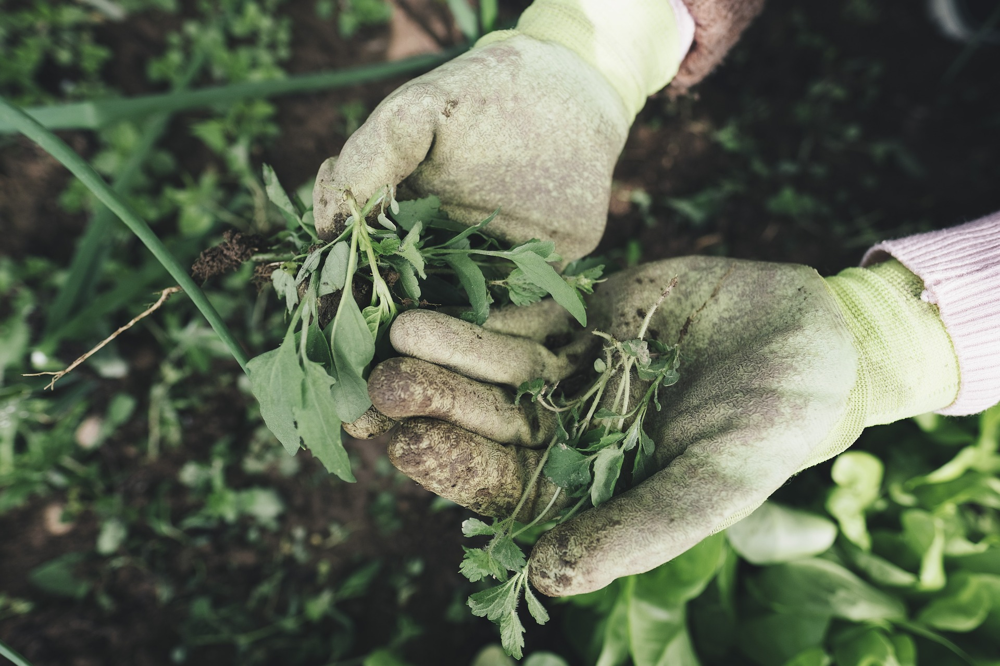

Here at Bland County Farmer's Market, we believe in sustainability and freshness. Our mission is to allow local farmers to grow and sell their products sustainably. We locally grow all of the products that we can, though we do import a few that cannot be grown here. We believe that you should be healthy, which is why we sell only the freshest and best quality goods available. All of our products are organic because we believe that all chemicals should be removed from your food.
Proudly sustainable, proudly local.